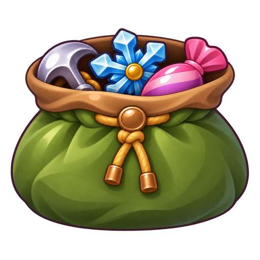
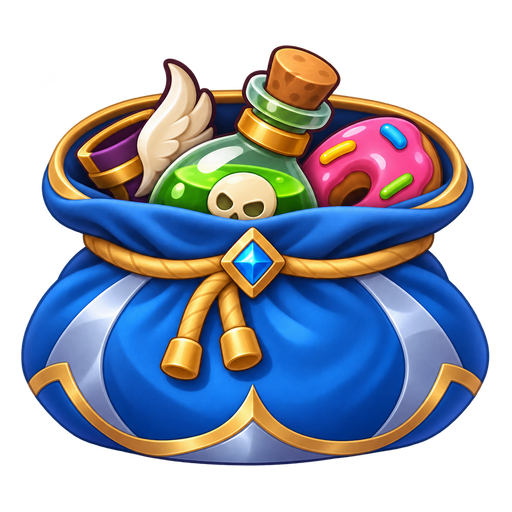
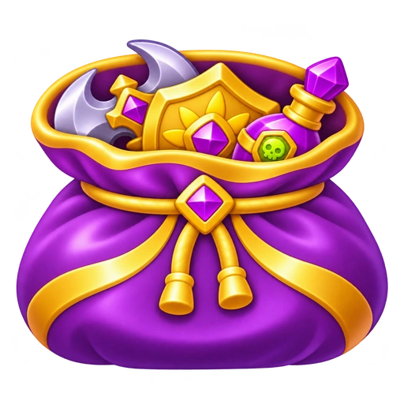
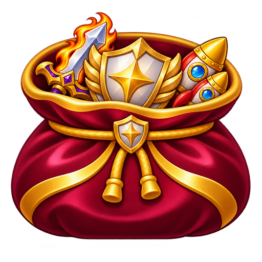

Созданы встроенным imagegen. По три предмета соответствующего качества, частично скрытых внутри раскрытого мешочка.




Промпты трёх качеств · Промпт кланового мешочка · Файлы, размеры и контрольные суммы